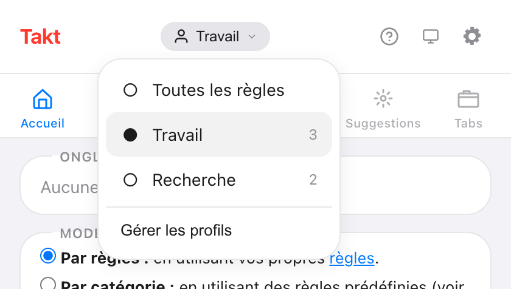
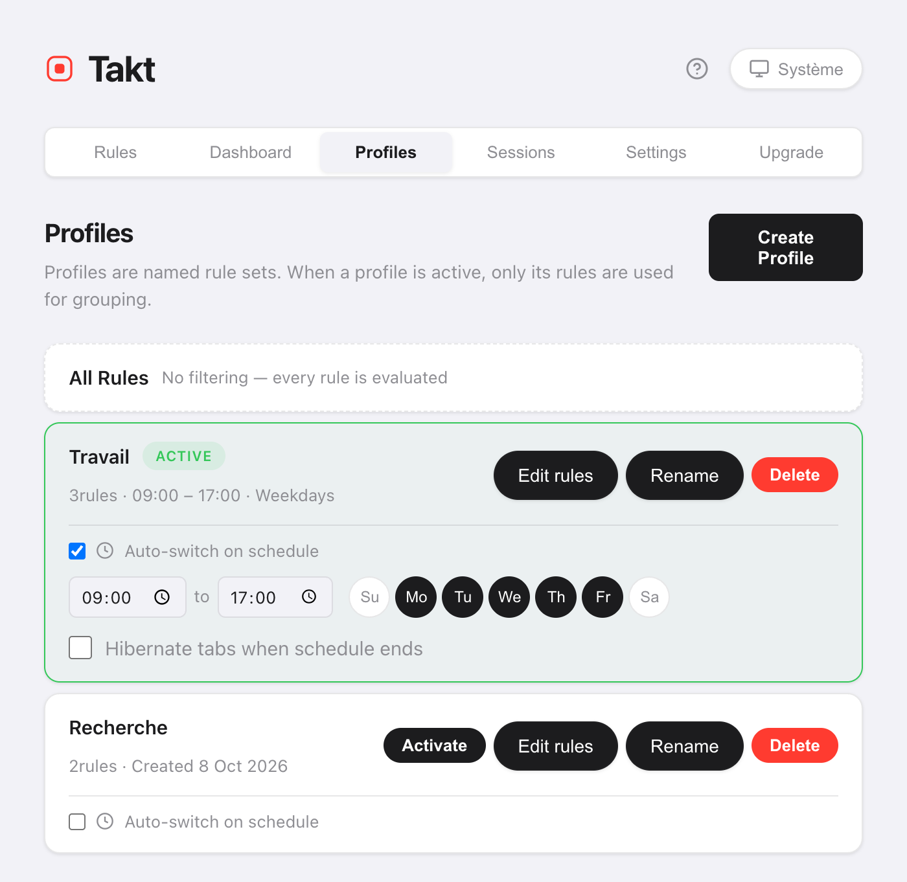

En bref : dans la page d'options de Takt, ouvrez Profiles, créez « Work » et « Personal », et attribuez des règles à chacun. Changez de profil depuis le menu des profils du popup, ou cochez Auto-switch on schedule et réglez les heures et les jours.
- Quand un profil est actif, seules ses règles regroupent vos onglets.
- Les planifications fonctionnent selon l'heure et le jour de la semaine, vérifiées une fois par minute.
- En option : mettre vos onglets en hibernation à la fin de la planification. Premium
Pourquoi vouloir plusieurs jeux de règles d'onglets ?
Parce qu'une règle utile au travail devient gênante à la maison. Un groupe « Code » pour GitHub tombe à pic à 10 h. À 21 h, vous préférerez peut-être regrouper YouTube et vos recettes, sans aucun groupe de travail.
Sans profils, vous avez deux options : une longue liste de règles qui essaie de tout couvrir, ou activer et désactiver des règles à la main. Les profils permettent à chaque contexte de garder sa propre liste, courte.
Comment créer un profil ?
- Ouvrez la page d'options de Takt et allez dans Profiles.
- Cliquez sur Create Profile et donnez-lui un nom.
- Copiez-y toutes vos règles actuelles, ou partez de zéro.
- Cliquez sur Edit rules pour cocher les règles qu'utilise ce profil.
Une nouvelle règle créée pendant qu'un profil est actif est automatiquement ajoutée à ce profil.
Comment passer d'un profil à l'autre ?
Ouvrez le popup et cliquez sur le nom du profil en haut. Le menu liste Toutes les règles et chaque profil, avec son nombre de règles. Choisissez-en un : il s'applique aussitôt.

Toutes les règles désactive les profils : toutes les règles sont alors évaluées. Changer de profil ne touche pas aux groupes existants. Les nouveaux onglets suivent les nouvelles règles ; cliquez sur Regrouper les onglets dans le popup pour regrouper le reste.
Comment changer de profil automatiquement selon l'heure ?
Sur la carte d'un profil, cochez Auto-switch on schedule. Puis réglez :
- L'heure de début et de fin. Par défaut, de 09:00 à 17:00.
- Les jours. Activez de Su à Sa (dimanche à samedi). Par défaut, du lundi au vendredi.
- Hibernate tabs when schedule ends (facultatif).

Takt vérifie la planification une fois par minute. Quand la plage horaire commence, il active le profil. Quand elle se termine, il revient à Toutes les règles.
Si deux planifications se chevauchent, le profil créé en premier l'emporte.
Que fait « Hibernate tabs when schedule ends » ?
À la fin de la plage horaire, Takt met en hibernation vos onglets ouverts. Il écarte l'onglet actif, les onglets qui diffusent du son, les onglets épinglés et toute URL de votre liste d'exclusion de la suspension.
Vos onglets de travail cessent d'utiliser de la mémoire à la fin de la journée, et restent dans la liste Veille jusqu'à ce que vous les réactiviez.
Les profils face aux autres façons de séparer travail et maison
| Profils Chrome séparés | Profils Takt | |
|---|---|---|
| Ce qui est séparé | Tout : fenêtres, historique, identifiants | Uniquement les règles de regroupement |
| Mêmes fenêtres et onglets | Non | Oui |
| Changement selon un horaire | Non | Oui |
Si vous avez besoin d'identifiants et d'un historique séparés, utilisez des profils Chrome distincts. Les profils Takt changent seulement la façon dont les onglets sont regroupés dans le navigateur que vous utilisez déjà.
Ce que les profils ne font pas
- Ils ne ferment ni n'ouvrent d'onglets. Un profil change les règles qui s'appliquent. Pour remplacer tout un ensemble d'onglets, utilisez les sessions.
- Une planification l'emporte pendant sa plage horaire. Changez de profil à la main pendant les heures planifiées, et Takt revient en arrière à la vérification suivante, en une minute environ. Désactivez la planification pour rester sur un autre profil.
- L'heure de fin doit être après l'heure de début. Une plage qui passe minuit nécessite deux profils.
Les règles du travail au travail. Celles de la maison à la maison.
Ajouter Takt à Chrome, gratuitementQuestions fréquentes
Que deviennent les règles qui ne font pas partie du profil actif ?
Elles sont ignorées jusqu'à ce que vous changiez de nouveau de profil. Sélectionnez Toutes les règles pour utiliser de nouveau toutes les règles.
Changer de profil regroupe-t-il mes onglets ouverts ?
Non. Les groupes existants restent. Les nouveaux onglets suivent les nouvelles règles. Cliquez sur Regrouper les onglets dans le popup pour regrouper ce qui est ouvert.
À quelle fréquence Takt vérifie-t-il la planification ?
Une fois par minute. Un profil s'active dans la minute qui suit son heure de début et se désactive dans la minute qui suit son heure de fin.
Les profils sont-ils gratuits ?
Non. Les profils et les planifications font partie de Premium, à 3 $/mois ou 30 $/an. Le plan Free comprend 5 règles et le regroupement par règles.